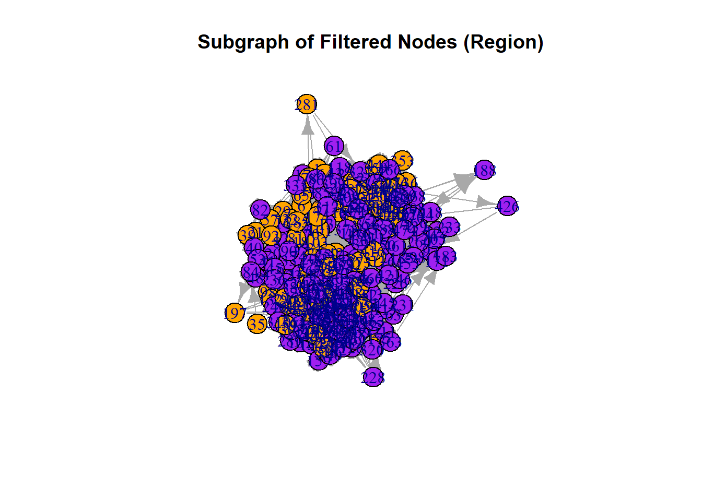
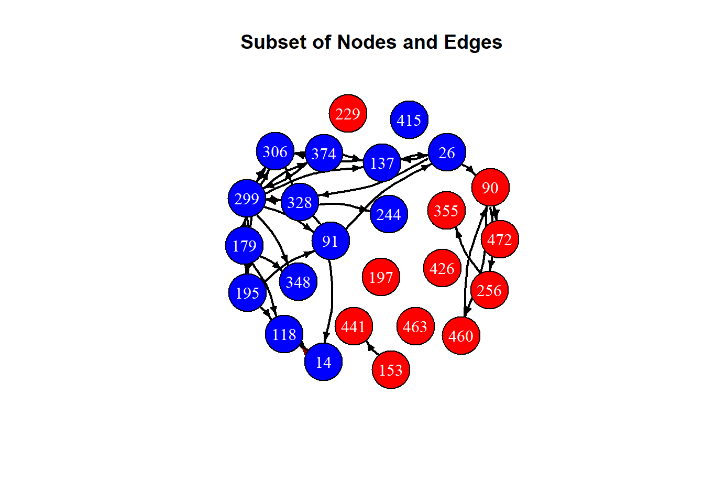
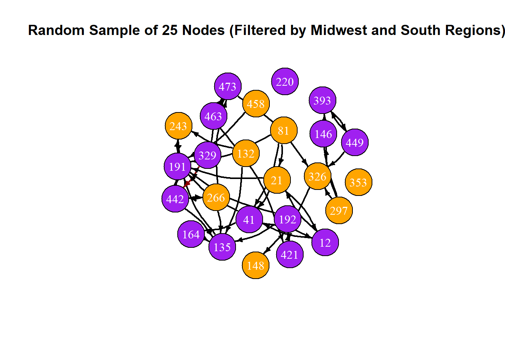
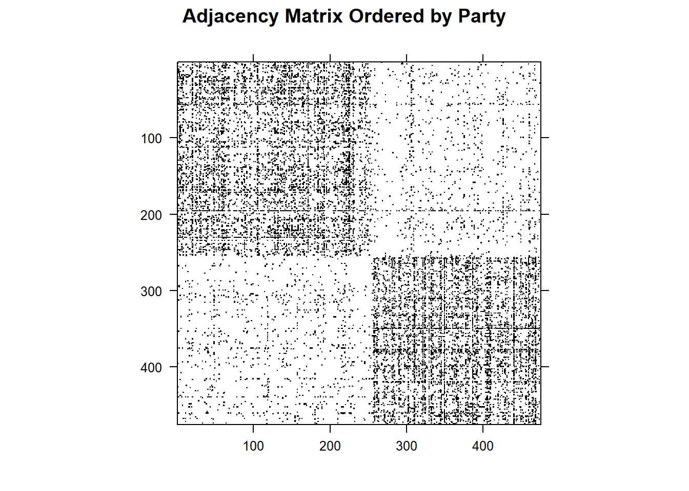
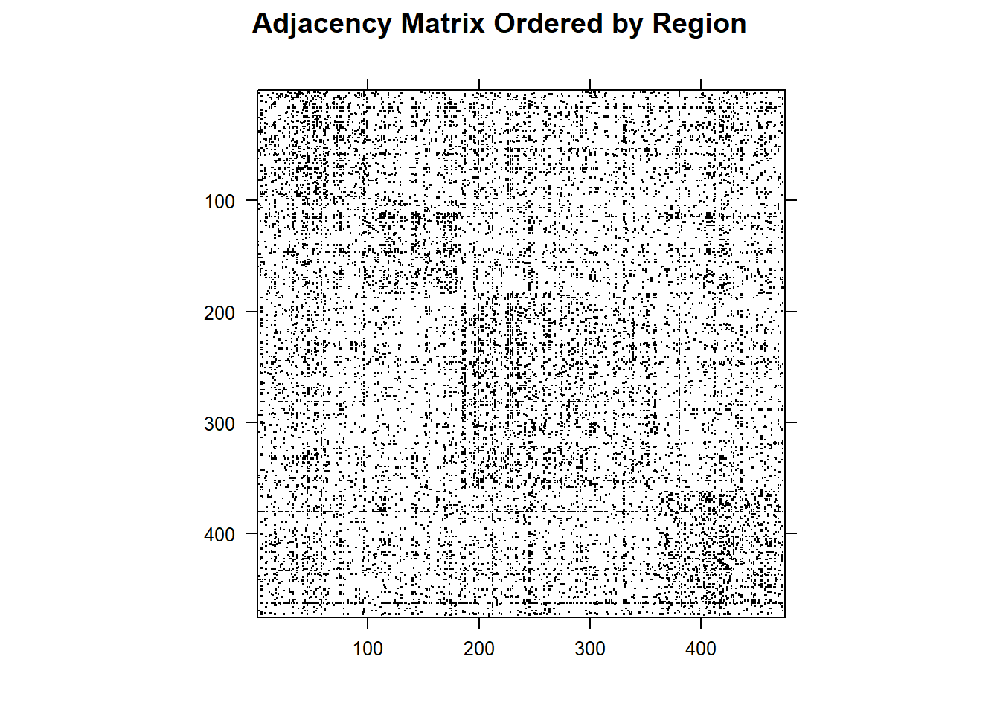

In this vignette, we will explore basic network analysis using the igraph package on the congress_network dataset. Network analysis helps us explore and understand the structure of a network; in this case, the Twitter interactions of the 117th Congress. Our objective in this vignette is to give a basic overview of how to use the igraph package for data visualization, and to analyze whether particular attributes such as party affiliation, chamber, and the geographical region of a member of Congress influences who they interact with on Twitter. We will additionally cover centrality metrics, graph metrics, bootstrap hypothesis testing, and adjacency matrices.
Data
The congress_network_data.json file is a network that represents the Twitter interaction network for the 117th United States Congress, taking into account the House of Representatives as well as the Senate. The congress_node_attributes file contains vertex attributes that include the name of the congressperson, their respective chamber, party affiliation, state, and Census Bureau-designated region of the state. The congress_network_data.json files can be downloaded here from Stanford’s SNAP website. The data in the congress_node_attributes file was collected independently.
Methodology
We perform our analysis in R using the rjson and igraph packages. We read in the data from the rjson file using our preprocessing script, as shown below. To read in the data from a json file, we transformed the data into a dataframe.
source(here::here("scripts/preprocessing.R"))
── Attaching core tidyverse packages ──────────────────────── tidyverse 2.0.0 ──
✔ dplyr 1.1.4 ✔ readr 2.1.5
✔ forcats 1.0.0 ✔ stringr 1.5.1
✔ ggplot2 3.5.1 ✔ tibble 3.2.1
✔ lubridate 1.9.3 ✔ tidyr 1.3.1
✔ purrr 1.0.2
── Conflicts ────────────────────────────────────────── tidyverse_conflicts() ──
✖ dplyr::filter() masks stats::filter()
✖ dplyr::lag() masks stats::lag()
ℹ Use the conflicted package (<http://conflicted.r-lib.org/>) to force all conflicts to become errors
Attaching package: 'igraph'
The following objects are masked from 'package:lubridate':
%--%, union
The following objects are masked from 'package:dplyr':
as_data_frame, groups, union
The following objects are masked from 'package:purrr':
compose, simplify
The following object is masked from 'package:tidyr':
crossing
The following object is masked from 'package:tibble':
as_data_frame
The following objects are masked from 'package:stats':
decompose, spectrum
The following object is masked from 'package:base':
union
Attaching package: 'Matrix'
The following objects are masked from 'package:tidyr':
expand, pack, unpack
# Read in the JSON filenetwork_json <-fromJSON(file = here::here("data/congress_network/congress_network_data.json"))# Use the preprocessing functionnetwork_df <-cnet_json_to_df(network_json)# Create congress twitter graphcnet_igraph <-create_cnet_igraph(network_df)
Important Terms and Information
When dealing with network data observations are typically referred to as nodes or vertices, and the connections between them are called edges.
Node attributes are the properties of individual observations, like someone’s age. Whereas edge attributes are information about the relationships between nodes, such as the type of relationship or its strength.
Additionally, network data can be directed or undirected. In a directed network, edges originate from a particular node (known as the source) and terminate in another (known as the target). In contrast no such directionality exists for undirected networks. For example, if we had data on a network of people in a gift exchange, this could be represented as a directed network where edges originate from the person giving a gift and terminate at the person receiving that particular gift.
The data that we will be analyzing in this vignette is a weighted, directed network. This means that our edges have direction, and that there is a single edge attribute, known as the weight. The edge weights in this data are referred to as transmission weights and they essentially represent the probability that the source retweets, quote tweets, replies to, or mentions the target after the target tweets.
Data Visualization
The primary R package for creating network visualizations is igraph. By converting the rjson file into a dataframe and incorporating the congress_node_attributes file, we can leverage the capabilities of igraph to generate detailed network visualizations. This package enables visualization of the entire network as well as its subgroups. Node colors in the visualizations are based on party affiliation, providing clear distinctions between groups. Our objective is to enhance these visualizations through random sampling techniques. Below, we attempt to create a visualization of the complete network.
As shown, the initial plot is cluttered and difficult to interpret due to the excessive number of nodes, and no specific attribute was assigned as vertex labels. Additionally, node colors are determined by party affiliation, highlighting group differences.
To address this, we created subgraphs by filtering the nodes based on specific attributes, such as region. In the subgraph below, we focused on the Midwest and South regions, with nodes in the Midwest colored orange, nodes in the South colored purple, and all other nodes colored gray. This allows us to clearly distinguish between these regions while maintaining the overall structure of the network.
# filter nodes by attributes (party or region)sub_nodes <-V(cnet_igraph)[party %in%c("D", "R") | region %in%c("Midwest", "South")]sub_g <-induced_subgraph(cnet_igraph, vids = sub_nodes)# colors based on regionV(sub_g)$color <-ifelse(V(sub_g)$region =="Midwest", "orange", ifelse(V(sub_g)$region =="South", "purple", "gray"))plot(sub_g,main ="Subgraph of Filtered Nodes (Region)")

Similar to the first plot, this visualization also suffers from readability issues due to the dense network. To address this, we applied a similar approach to simplify the graph.
Below, we randomly sampled individuals from the attributes dataframe and matched them to their connections in the network dataframe to create a plot of this random sample. The node colors in the plot are determined by party affiliation, enhancing the visual distinction between groups. While not depicted here, additional noise reduction can be achieved by filtering the data based on specific attributes.
# load in node attributescnet_node_attributes <-read_csv("data/congress_node_attributes.csv",show_col_types =FALSE)# sample from node attributes, then name in sample set.seed(123)sample_indices <-sample(nrow(cnet_node_attributes), size =25)sample_nodes <- cnet_node_attributes[sample_indices,]# want to make sure the attributes and nodes matchid_node <- sample_nodes$nodeid_from <- network_df$fromid_to <- network_df$tonet_sam <-data.frame(from =double(),to =integer(),weight =double())for (i in id_node){if (i %in% id_to | i %in% id_from){ matches_from <-subset(network_df, from == i) matches_to <-subset(network_df, to == i) net_sam <-rbind(net_sam, matches_from, matches_to) }}net_sam <-subset(net_sam, from %in% sample_nodes$node & to %in% sample_nodes$node)g2 <-graph_from_data_frame(net_sam,directed =TRUE,vertices = sample_nodes)# colors based on partyV(g2)$color <-ifelse(V(g2)$party =="D", "blue", ifelse(V(g2)$party =="R", "red", "gray"))# color based on weightE(g2)$color <-ifelse(E(g2)$weight > .025, "darkred", "black")plot(g2,edge.width =2,edge.color =E(g2)$color,edge.curved =0.2,edge.arrow.size =0.5,edge.color ="black",vertex.color =V(g2)$color, vertex.size =30,vertex.frame.color ="black",vertex.label.color ="white",layout = layout_with_fr,main ="Subset of Nodes and Edges")

To explore a subset of the network, we first filtered the nodes based on their region (Midwest and South). After narrowing down the dataset to these two regions, we randomly selected n=25 nodes to analyze further. This sampling ensures that we focus on a manageable portion of the network while retaining the regional diversity we are interested in. We then extracted the corresponding edges that connect these sampled nodes and created a subgraph for visualization. In this plot, nodes are colored according to their region: Midwest nodes are colored orange and South nodes are colored purple. The edges are colored based on their weight, with higher-weighted connections shown in dark red. This approach allows us to examine the structure of a smaller, region-specific portion of the network.
# sample from node attributes, then match to corresponding connections in the networkset.seed(123)# filter the nodes by region (Midwest and South)filtered_nodes <- cnet_node_attributes[cnet_node_attributes$region %in%c("Midwest", "South"), ]# random sample from the filtered nodessample_nodes <- filtered_nodes[sample(nrow(filtered_nodes), size =25), ]# make sure attributes and nodes matchid_node <- sample_nodes$nodeid_from <- network_df$fromid_to <- network_df$tonet_sam <-data.frame(from =double(),to =integer(),weight =double())for (i in id_node) {if (i %in% id_to | i %in% id_from) { matches_from <-subset(network_df, from == i) matches_to <-subset(network_df, to == i) net_sam <-rbind(net_sam, matches_from, matches_to) }}# only keep the sampled nodesnet_sam <-subset(net_sam, from %in% sample_nodes$node & to %in% sample_nodes$node)# subgraph from the sampled nodes and filtered edgesg2 <-graph_from_data_frame(net_sam,directed =TRUE,vertices = sample_nodes)# colors based on regionV(g2)$color <-ifelse(V(g2)$region =="Midwest", "orange", ifelse(V(g2)$region =="South", "purple", "gray"))# colors based on weightE(g2)$color <-ifelse(E(g2)$weight >0.025, "darkred", "black")plot(g2,edge.width =2,edge.color =E(g2)$color,edge.curved =0.2,edge.arrow.size =0.5,vertex.color =V(g2)$color, vertex.size =30,vertex.frame.color ="black",vertex.label.color ="white",layout = layout_with_fr,main ="Random Sample of 25 Nodes (Filtered by Midwest and South Regions)")

Centrality Metrics
Centrality metrics are node specific measures that aim to quantify the importance of a node in a network. While there there are many different centrality metrics, we will focus on the following:
Degree: The number of edges that a particular node has
Betweenness: How frequently a particular node lies along the shortest path between any two other nodes
Closeness: Inverse of the sum of the shortest path length between that node and every other node in the network
The below code chunk shows how we can calculate these centrality metrics for our network data.
Next we want to find what nodes in our network are the most central based off of these metrics. The code below creates tables with the top five nodes based off of each metric.
As we can see from the above tables, Kevin McCarthy is present in all five of the tables, which implies that he is highly central to the network.
Graph/Subgraph Metrics
Graph and subgraphs metrics are used to measure qualities of the network as a whole rather than looking at each individual node as we did with centrality networks. The metrics we will be looking at are:
Transitivity: The probability that if some node A – node B, and node B – node C, then node A – node C
Edge Density: Ratio of actual number of edges to total possible edges
Mean Distance: Mean of the smallest distance between two nodes
Reciprocity: In a directed network, the probability that if node A – node B, then node B – node A
First we are going to create a few important subgraphs including the Democratic and Republican subgraphs, the House and Senate subgraphs, and the subgraphs for each region.
In the table above, we can see that all of the subgraphs have a much higher edge density than the overall graph. This makes sense as the sugraphs only contain observations that share a certain attribute in common, and we would generally expect that people on twitter interact more often with people they are similar with. However, this does bring up the question: How can we tell if these differences are statistically significant?
Hypothesis Testing
In order to formally test whether these differences are statistically significant, we will need to find a distribution that our test statistics (i.e., our subgraph metrics) can be compared to in order to obtain a \(p\)-value. One way to do this is to repeatedly randomly sample subgraphs of the same size from the overall graph and calculate the metric of interest on the randomly sampled subgraphs. We then can use these metrics as a null distribution of the metric of interest. To help us perform this procedure, we will define a function called resample.t.test() which will follow these steps to calculate a \(p\)-value given a specific graph, subgraph, statistic, and \(n\), the number of random samples to perform. We then apply this function to the subgraphs and metrics that we looked at in the previous section.
set.seed(12132024)# resampling t-test to compare statistic of a subgraph to the overall graphresample.t.test <-function(graph, subgraph, statistic, n, type =c("upper", "lower", "two-tailed")) {# get number of nodes in graph and subgraph n.graph <- graph %>%length() n.subgraph <- subgraph %>%length()# extract function to get statistic statistic <-get(statistic, mode ="function")# calculate distribution of the statistic of interest through random sampling stat.dist <-lapply(1:n,function(i) { graph %>%subgraph(sample(n.graph, n.subgraph) ) %>%statistic() } ) %>%unlist()# calculate mean of the distribution dist.mean <-mean(stat.dist)# calculate test statistic test.stat <- subgraph %>%statistic()# calculate p-valueif (type =="upper") { pval <-sum(stat.dist >= test.stat)/n }elseif (type =="lower") { pval <-sum(stat.dist <= test.stat)/n }elseif (type =="two-tailed") { pval <-sum(stat.dist >= dist.mean +abs(test.stat - dist.mean))/n +sum(abs(stat.dist <= dist.mean -abs(test.stat - dist.mean)))/n } out <-list(dist = stat.dist,stat = test.stat,pval = pval )return(out)}# prepare matrix to store t-test resultst.test.results <-matrix(data =rep(rep(0, length(groups)), length(metrics)),nrow =length(graphs), ncol =length(metrics), dimnames = (list(c("dem", "rep", "house", "senate", "midwest", "west", "south", "northeast"), metrics)))# perform t-tests on subgraph metricsfor (i in1:length(graphs)) {for (j in1:length(metrics)) { t.test.results[i,j] <-resample.t.test(cnet_igraph, get(graphs[i]), metrics[j], 10000, "two-tailed")$pval }}
The results of our hypothesis test are shown in the following table.
However, since we performed multiple hypothesis tests, we will need to correct our \(p\)-values to account for the fact that the individual Type I Error rates compound over multiple test. Here, we will use the Benjamini-Yekuteili correction.
# convert igraph object into an adjacency matrixcnet_adj <-as_adjacency_matrix(cnet_igraph)# define helper function to reorder adjacency matrix based on particular node attributesreorder_cnet_adj <-function(adj_mat, attribute) {# load in node attributes node_attributes <-read_csv("data/congress_node_attributes.csv",show_col_types =FALSE)# obtain new order by arranging based on attribute new_order <- node_attributes %>%mutate(rand_order =sample(node) ) %>%arrange(get(attribute), rand_order ) %>%mutate(new_order =row_number() ) %>%arrange( node ) %>%pull( new_order )# reorder adjancency matrix based on the new order new_adj_mat <- adj_matfor (i in1:475) {for (j in1:475) { new_adj_mat[new_order[i], new_order[j]] <- adj_mat[i,j] } }return(new_adj_mat)}# generate adjacency matrices ordered by each set of node attributescnet_adj_chamber <-reorder_cnet_adj(cnet_adj, "chamber")cnet_adj_party <-reorder_cnet_adj(cnet_adj, "party")cnet_adj_state <-reorder_cnet_adj(cnet_adj, "state")cnet_adj_region <-reorder_cnet_adj(cnet_adj, "region")
Community detection involves identifying groups of vertices within a graph that are more densely connected to each other than to the rest of the network. Since our data represents a weighted, directed network, we will use the Walktrap algorithm, which is better suited for such networks compared to the Louvain method, which requires an undirected graph. This simulates random walks on the graph to detect communities.
Below, we will explore four methods for reducing the complexity of our community detection graphs: filtering edges by weight, applying random sampling to the edges, sampling a subset of nodes, and pruning edges based on node degree.
To avoid creating an overly dense graph, we will reduce its complexity by using a random sample from the data visualization portion. Additionally, we have filtered the edges based on their weights, removing connections that are less significant. Specifically, we excluded edges with weights below 0.003, as the median weight across all edges is 0.0025, which helps focus on the most meaningful connections in the network.
# remove edges with weight below 0.003g2_filtered <-delete_edges(g2, E(g2)[weight <0.003])# perform Walktrap community detection on the filtered graphcommunity_walktrap <-cluster_walktrap(g2_filtered)# assign colors to the communitiesV(g2_filtered)$color <-factor(community_walktrap$membership)plot(g2_filtered,edge.width =2,edge.color =E(g2_filtered)$color,edge.curved =0.2,edge.arrow.size =0.5,vertex.color =V(g2_filtered)$color,vertex.size =30,vertex.frame.color ="black",vertex.label.color ="white",layout = layout_with_fr,main ="Community Detection (Filtered Graph with Walktrap)")

We can also apply random sampling to reduce the size and density of the graph, while preserving its underlying structure.
# total number of edgestotal_edges <-ecount(g2)# sample from edges, ensuring the sample size doesn't exceed the number of edgesset.seed(123)sample_size <-min(100, total_edges)sampled_edges <-sample(E(g2), size = sample_size) # Sample edges# new graph with the sampled edgesg2_sampled <-subgraph.edges(g2, sampled_edges)
Warning: `subgraph.edges()` was deprecated in igraph 2.1.0.
ℹ Please use `subgraph_from_edges()` instead.
# Walktrap community detection on the sampled graphcommunity_walktrap <-cluster_walktrap(g2_sampled)V(g2_sampled)$color <-factor(community_walktrap$membership)plot(g2_sampled,edge.width =2,edge.color =E(g2_sampled)$color,edge.curved =0.2,edge.arrow.size =0.5,vertex.color =V(g2_sampled)$color,vertex.size =30,vertex.frame.color ="black",vertex.label.color ="white",layout = layout_with_fr,main ="Community Detection (Sampled Graph with Walktrap)")
We can also sample a subset of nodes, which simplifies the analysis by focusing on specific nodes.
# sample 25 nodes from the graphset.seed(123)sampled_nodes <-sample(V(g2), size =25)# subgraph containing only the sampled nodesg2_sampled_nodes <-induced_subgraph(g2, vids = sampled_nodes)# perform Walktrap community detection on the sampled graphcommunity_walktrap <-cluster_walktrap(g2_sampled_nodes)V(g2_sampled_nodes)$color <-factor(community_walktrap$membership)plot(g2_sampled_nodes,edge.width =2,edge.color =E(g2_sampled_nodes)$color,edge.curved =0.2,edge.arrow.size =0.5,vertex.color =V(g2_sampled_nodes)$color,vertex.size =30,vertex.frame.color ="black",vertex.label.color ="white",layout = layout_with_fr,main ="Community Detection (Sampled Nodes with Walktrap)")

We can also remove edges between nodes with low degrees, under the assumption that highly connected nodes play a more significant role in community detection.
# remove edges between nodes with low degreeslow_degree_nodes <-V(g2)[degree(g2) <3]g2_pruned <-delete_edges(g2, E(g2)[.from(low_degree_nodes) |.to(low_degree_nodes)])# Walktrap community detection on the pruned graphcommunity_walktrap <-cluster_walktrap(g2_pruned)V(g2_pruned)$color <-factor(community_walktrap$membership)plot(g2_pruned,edge.width =2,edge.color =E(g2_pruned)$color,edge.curved =0.2,edge.arrow.size =0.5,vertex.color =V(g2_pruned)$color,vertex.size =30,vertex.frame.color ="black",vertex.label.color ="white",layout = layout_with_fr,main ="Community Detection (Pruned Graph with Walktrap)")